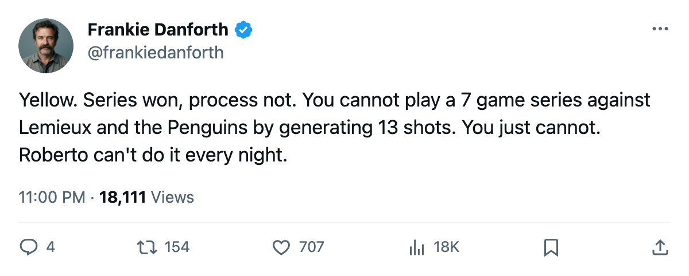

TOR
TOR NYI
NYITHE PANIC METER, PLAYOFF EDITION: Code Yellow after 13 shots and 30 saves, and a Penguins team that just beat someone better than New York
The series is won. The process that won it is not something I want to see twice against Lemieux
 Frankie DanforthColumnist · Queen City Telegram
Frankie DanforthColumnist · Queen City Telegram
Code Yellow

I want to be fair. The series is 4-1. We are in Round 2. The Cup is the goal and we are still alive. Luongo is 4-1 with a 1.41 GAA and I have no argument with that, not tonight, not this week, not until someone shoots at him for 60 minutes without stopping it.
But I watched the clincher. 30-13. Thirty shots at Roberto. Thirteen the other way. New York had a chance to make this a Game 6 with that volume and they blinked, and Luongo made them blink again, and that is a good thing when it works. That is a dangerous thing when it works.
 Pittsburgh Penguins just beat
Pittsburgh Penguins just beat  New Jersey Devils, a 114-point club, in six games. Five of those six games were decided by one goal. The Penguins have been in every game all spring and found a way to close them. That is a different animal from the Islanders team that needed 47 shots in one game to break through once.
New Jersey Devils, a 114-point club, in six games. Five of those six games were decided by one goal. The Penguins have been in every game all spring and found a way to close them. That is a different animal from the Islanders team that needed 47 shots in one game to break through once.
 Mario Lemieux85 has 8 points in 6 playoff games. Eight. At his age, in this league, on a 7th seed. He is playing the best hockey of his career again while our own 1C has 4 points in 5. I do not need Sundin to outscore Lemieux. I need him to be present in the games that matter.
Mario Lemieux85 has 8 points in 6 playoff games. Eight. At his age, in this league, on a 7th seed. He is playing the best hockey of his career again while our own 1C has 4 points in 5. I do not need Sundin to outscore Lemieux. I need him to be present in the games that matter.
The Panic Meter: Code Yellow. 🟡
Not Green because: we are entering a 7-game series with an offense that scored 2 goals on 13 shots in the clinching game. That is not a system, that is a hot goaltender. Not Orange because: Luongo is .963, we have the best defense in the league, and we went 4-0-0 against this club during the regular season.
I want to see the second line produce.  Brad Richards89 has been fine, 66 points in 80 regular season games, but fine is not enough against a team that plays close. I want to see the 19-year-old, Petr Chlup87, with his 33 goals and his 59 points in 71 games, play a line that matters. He is not in the playoff scoring leaders. That means he has fewer than 3 points in 5 games, which for a kid who scored at that pace in October and November and February tells you he needs a bigger role.
Brad Richards89 has been fine, 66 points in 80 regular season games, but fine is not enough against a team that plays close. I want to see the 19-year-old, Petr Chlup87, with his 33 goals and his 59 points in 71 games, play a line that matters. He is not in the playoff scoring leaders. That means he has fewer than 3 points in 5 games, which for a kid who scored at that pace in October and November and February tells you he needs a bigger role.
The regular season record against Pittsburgh is 4-0-0, 20-9 on goals. Two of those were one-goal games. I do not pretend a regular season record predicts a playoff series. But it tells you the match-up is favorable if the top players show up, and 13 shots of offense is not showing up.
I will take the win. I will take the 4-1. But I want to see 30 shots tomorrow, not 13.
